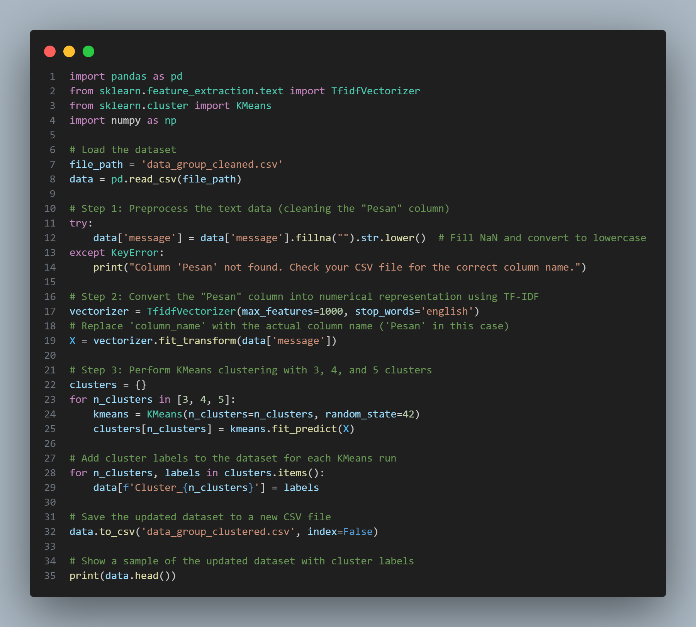

1. Export konten beberapa grup Whatsapp Anda menjadi sebuah file teks.
2. Ubah file teks (.txt) menjadi file (.csv), kemudian kompres sebagai file TAR.
3. Lakukan pembersihan data dengan hanya mengambil angka, huruf, dan tanda baca umum.
4. Lakukan scale data untuk preprocessing untuk analisis selanjutnya.
5. Lakukan clustering menggunakan algoritma k-Means.
6. Tampilkan hasil clustering.